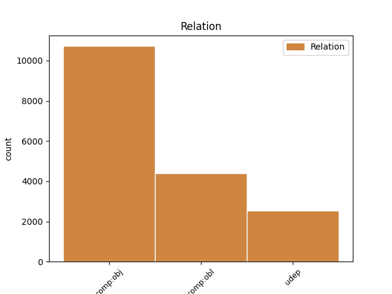
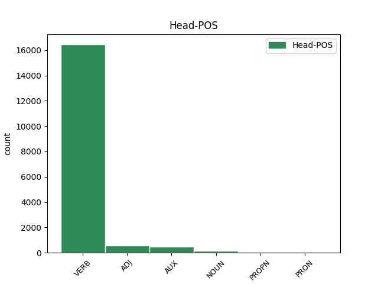
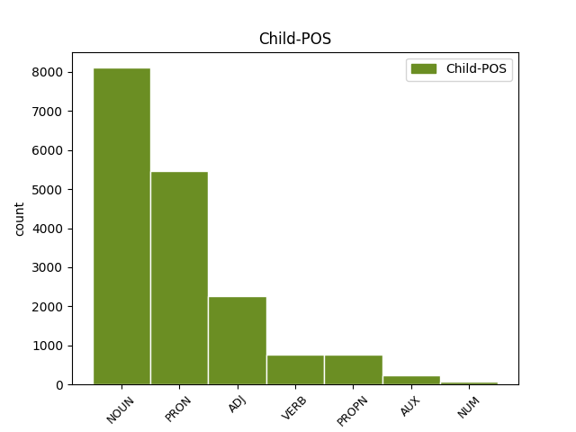

Distribution of features within this leaf



Agreement Rules sorted by frequency.
- When the dependent token is the direct object complements(comp:obj) of the head token,
1 Obiurgationes _ _ _ _ 0 _ _ _
2 etiam _ _ _ _ 0 _ _ _
3 non _ _ _ _ 0 _ _ _
4 numquam _ _ _ _ 0 _ _ _
5 incidunt _ _ _ _ 0 _ _ _
6 necessariae _ _ _ _ 0 _ _ _
7 in _ _ _ _ 0 _ _ _
8 quibus _ _ _ _ 0 _ _ _
9 utendum utor VERB V- Case=Nom|Gender=Neut|Number=Sing|VerbForm=Gdv 0 _ _ _
10 est _ _ _ _ 0 _ _ _
11 fortasse _ _ _ _ 0 _ _ _
12 et _ _ _ _ 0 _ _ _
13 vocis _ _ _ _ 0 _ _ _
14 contentione contentio NOUN Nb Case=Abl|Gender=Fem|Number=Sing 9 comp:obj _ ref=1.136
15 maiore _ _ _ _ 0 _ _ _
16 et _ _ _ _ 0 _ _ _
17 verborum _ _ _ _ 0 _ _ _
18 gravitate _ _ _ _ 0 _ _ _
19 acriore _ _ _ _ 0 _ _ _
20 id _ _ _ _ 0 _ _ _
21 agendum _ _ _ _ 0 _ _ _
22 etiam _ _ _ _ 0 _ _ _
23 ut _ _ _ _ 0 _ _ _
24 ea _ _ _ _ 0 _ _ _
25 facere _ _ _ _ 0 _ _ _
26 videamur _ _ _ _ 0 _ _ _
27 irati _ _ _ _ 0 _ _ _
1 Sunt _ _ _ _ 0 _ _ _
2 his hic ADJ Pd Case=Dat|Gender=Masc|Number=Plur 5 comp:obl _ ref=1.109
3 alii _ _ _ _ 0 _ _ _
4 multum _ _ _ _ 0 _ _ _
5 dispares dispar ADJ A- Case=Nom|Degree=Pos|Gender=Fem,Masc|Number=Plur 0 _ _ _
6 simplices _ _ _ _ 0 _ _ _
7 et _ _ _ _ 0 _ _ _
8 aperti _ _ _ _ 0 _ _ _
9 qui _ _ _ _ 0 _ _ _
10 nihil _ _ _ _ 0 _ _ _
11 ex _ _ _ _ 0 _ _ _
12 occulto _ _ _ _ 0 _ _ _
13 nihil _ _ _ _ 0 _ _ _
14 de _ _ _ _ 0 _ _ _
15 insidiis _ _ _ _ 0 _ _ _
16 agendum _ _ _ _ 0 _ _ _
17 putant _ _ _ _ 0 _ _ _
18 veritatis _ _ _ _ 0 _ _ _
19 cultores _ _ _ _ 0 _ _ _
20 fraudis _ _ _ _ 0 _ _ _
21 inimici _ _ _ _ 0 _ _ _
22 item _ _ _ _ 0 _ _ _
23 que _ _ _ _ 0 _ _ _
24 alii _ _ _ _ 0 _ _ _
25 qui _ _ _ _ 0 _ _ _
26 quidvis _ _ _ _ 0 _ _ _
27 perpetiantur _ _ _ _ 0 _ _ _
28 cuivis _ _ _ _ 0 _ _ _
29 deserviant _ _ _ _ 0 _ _ _
30 dum _ _ _ _ 0 _ _ _
31 quod _ _ _ _ 0 _ _ _
32 velint _ _ _ _ 0 _ _ _
33 consequantur _ _ _ _ 0 _ _ _
34 ut _ _ _ _ 0 _ _ _
35 Sullam _ _ _ _ 0 _ _ _
36 et _ _ _ _ 0 _ _ _
37 Marcum _ _ _ _ 0 _ _ _
38 Crassum _ _ _ _ 0 _ _ _
39 videbamus _ _ _ _ 0 _ _ _
1 quod _ _ _ _ 0 _ _ _
2 maxime _ _ _ _ 0 _ _ _
3 tum _ _ _ _ 0 _ _ _
4 solet _ _ _ _ 0 _ _ _
5 evenire _ _ _ _ 0 _ _ _
6 cum _ _ _ _ 0 _ _ _
7 studiose _ _ _ _ 0 _ _ _
8 de _ _ _ _ 0 _ _ _
9 absentibus _ _ _ _ 0 _ _ _
10 detrahendi _ _ _ _ 0 _ _ _
11 causa causa NOUN Nb Case=Abl|Gender=Fem|Number=Sing 20 udep _ ref=1.134
12 aut _ _ _ _ 0 _ _ _
13 per _ _ _ _ 0 _ _ _
14 ridiculum _ _ _ _ 0 _ _ _
15 aut _ _ _ _ 0 _ _ _
16 severe _ _ _ _ 0 _ _ _
17 maledice _ _ _ _ 0 _ _ _
18 contumeliose _ _ _ _ 0 _ _ _
19 que _ _ _ _ 0 _ _ _
20 dicitur dico VERB V- Mood=Ind|Number=Sing|Person=3|Tense=Pres|VerbForm=Fin|Voice=Pass 0 _ _ _
Disagree Examples:
1 haec hic ADJ Pd Case=Acc|Gender=Neut|Number=Plur 4 comp:obj _ ref=MATT_1.20
2 autem _ _ _ _ 0 _ _ _
3 eo _ _ _ _ 0 _ _ _
4 cogitante cogito VERB V- Case=Abl|Gender=Masc|Number=Sing|Tense=Pres|VerbForm=Part|Voice=Act 0 _ _ _
5 ecce _ _ _ _ 0 _ _ _
6 angelus _ _ _ _ 0 _ _ _
7 Domini _ _ _ _ 0 _ _ _
8 in _ _ _ _ 0 _ _ _
9 somnis _ _ _ _ 0 _ _ _
10 apparuit _ _ _ _ 0 _ _ _
11 ei _ _ _ _ 0 _ _ _
12 dicens _ _ _ _ 0 _ _ _
1 et _ _ _ _ 0 _ _ _
2 vocabunt voco VERB V- Mood=Ind|Number=Plur|Person=3|Tense=Fut|VerbForm=Fin|Voice=Act 0 _ _ _
3 nomen nomen NOUN Nb Case=Acc|Gender=Neut|Number=Sing 2 comp:obj _ ref=MATT_1.23
4 eius _ _ _ _ 0 _ _ _
5 Emmanuhel _ _ _ _ 0 _ _ _
6 quod _ _ _ _ 0 _ _ _
7 est _ _ _ _ 0 _ _ _
8 interpretatum _ _ _ _ 0 _ _ _
9 Nobis _ _ _ _ 0 _ _ _
10 cum _ _ _ _ 0 _ _ _
11 Deus _ _ _ _ 0 _ _ _
1 cum _ _ _ _ 0 _ _ _
2 ergo _ _ _ _ 0 _ _ _
3 natus _ _ _ _ 0 _ _ _
4 esset _ _ _ _ 0 _ _ _
5 Iesus _ _ _ _ 0 _ _ _
6 in _ _ _ _ 0 _ _ _
7 Bethleem _ _ _ _ 0 _ _ _
8 Iudaeae _ _ _ _ 0 _ _ _
9 in _ _ _ _ 0 _ _ _
10 diebus _ _ _ _ 0 _ _ _
11 Herodis _ _ _ _ 0 _ _ _
12 regis _ _ _ _ 0 _ _ _
13 ecce _ _ _ _ 0 _ _ _
14 magi _ _ _ _ 0 _ _ _
15 ab _ _ _ _ 0 _ _ _
16 oriente _ _ _ _ 0 _ _ _
17 venerunt venio VERB V- Aspect=Perf|Mood=Ind|Number=Plur|Person=3|Tense=Past|VerbForm=Fin|Voice=Act 0 _ _ _
18 Hierosolymam Hierosolyma PROPN Ne Case=Acc|Gender=Fem|Number=Sing 17 comp:obl _ ref=MATT_2.1
19 dicentes _ _ _ _ 0 _ _ _
1 vidimus video VERB V- Aspect=Perf|Mood=Ind|Number=Plur|Person=1|Tense=Past|VerbForm=Fin|Voice=Act 0 _ _ _
2 enim _ _ _ _ 0 _ _ _
3 stellam stella NOUN Nb Case=Acc|Gender=Fem|Number=Sing 1 comp:obj _ ref=MATT_2.2
4 eius _ _ _ _ 0 _ _ _
5 in _ _ _ _ 0 _ _ _
6 oriente _ _ _ _ 0 _ _ _
7 et _ _ _ _ 0 _ _ _
8 venimus _ _ _ _ 0 _ _ _
9 adorare _ _ _ _ 0 _ _ _
10 eum _ _ _ _ 0 _ _ _
1 et _ _ _ _ 0 _ _ _
2 congregans congrego VERB V- Case=Nom|Gender=Masc|Number=Sing|Tense=Pres|VerbForm=Part|Voice=Act 0 _ _ _
3 omnes _ _ _ _ 0 _ _ _
4 principes princeps NOUN Nb Case=Acc|Gender=Masc|Number=Plur 2 comp:obj _ ref=MATT_2.4
5 sacerdotum _ _ _ _ 0 _ _ _
6 et _ _ _ _ 0 _ _ _
7 scribas _ _ _ _ 0 _ _ _
8 populi _ _ _ _ 0 _ _ _
9 sciscitabatur _ _ _ _ 0 _ _ _
10 ab _ _ _ _ 0 _ _ _
11 eis _ _ _ _ 0 _ _ _
12 ubi _ _ _ _ 0 _ _ _
13 Christus _ _ _ _ 0 _ _ _
14 nasceretur _ _ _ _ 0 _ _ _